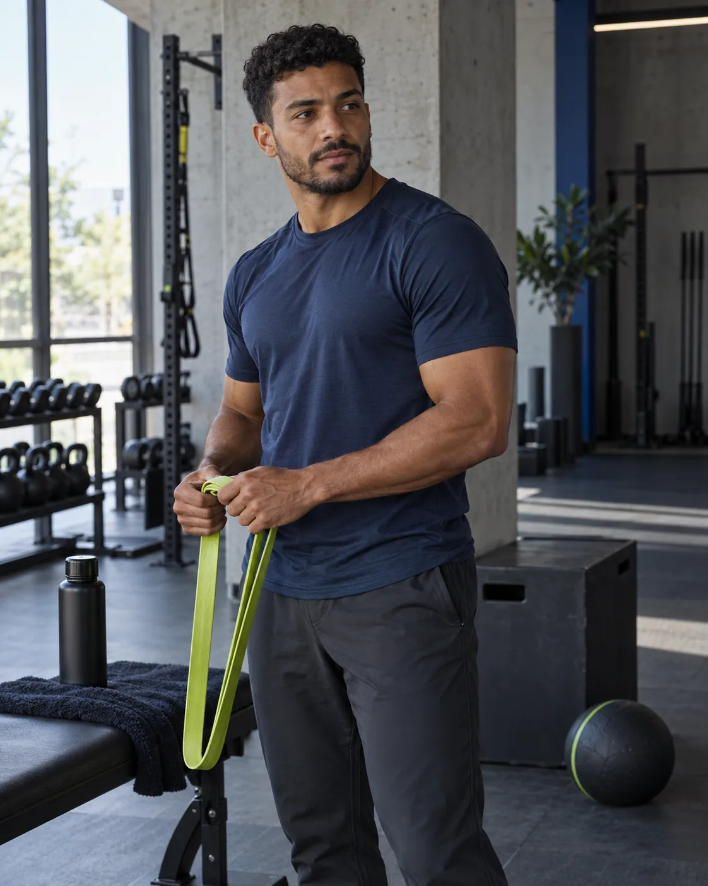
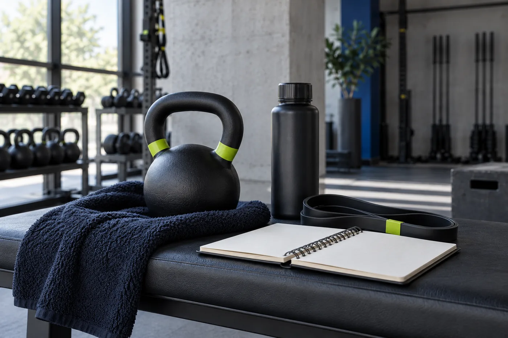
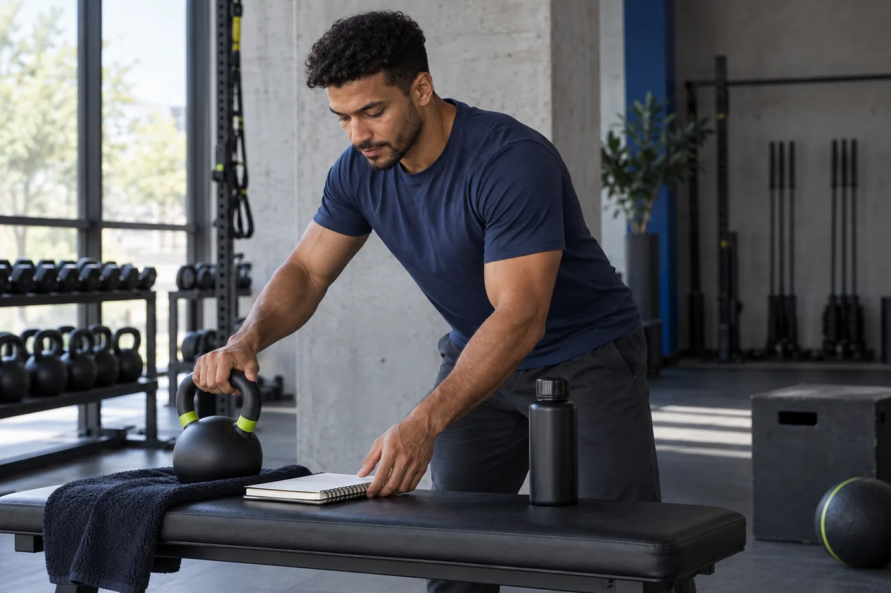

Está começando
Para entender como organizar os primeiros treinos com mais segurança e clareza.
Personal trainer · Projeto conceitual
Acompanhamento individual para quem quer começar, retomar ou organizar os exercícios com um plano claro e possível de seguir.

Para quem é
Para entender como organizar os primeiros treinos com mais segurança e clareza.
Para transformar o treino em uma parte possível da rotina, sem fórmulas prontas.
Para ter um acompanhamento alinhado às suas dúvidas, disponibilidade e objetivos.
Para saber o que fazer em cada sessão e acompanhar o plano com mais autonomia.
Acompanhamento
As modalidades abaixo são conceituais e mostram como o serviço poderia ser apresentado. Valores e condições seriam definidos com o profissional real.
No mesmo espaço
Encontros em horário combinado, com orientação durante a execução e organização do treino.
Tenho interesseDe onde estiver
Acompanhamento à distância, com alinhamentos sobre rotina e acesso ao plano organizado.
Tenho interessePara treinar com autonomia
Estrutura de exercícios montada a partir da conversa inicial e da rotina informada.
Tenho interesse
Como funciona
Você inicia a conversa e conta o que está procurando.
O contexto do treino é organizado a partir das informações compartilhadas.
Presencial, online ou plano personalizado: a escolha é alinhada em conjunto.
Você recebe as orientações necessárias para começar a rotina combinada.
Marca pessoal
Caio Nunes é um personagem fictício criado para demonstrar como um personal trainer poderia apresentar seu trabalho com clareza e personalidade.
A proposta da marca é mostrar um profissional próximo, organizado e atento à rotina de cada pessoa — sem prometer resultados e sem inventar credenciais.

Próximo passo
Comece com uma conversa simples sobre o que você procura.
Quero conversar sobre meu treino Conhecer o acompanhamento